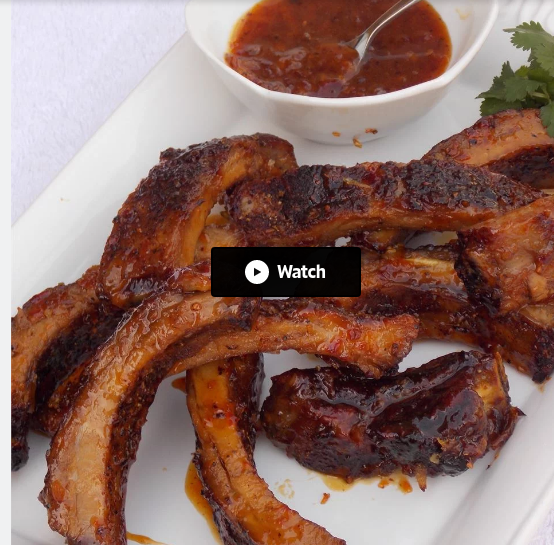

Italian Sausage Baby Back Ribs

Description
These Italian sausage-spiced baby back ribs have a wonderful flavor, which is further highlighted by the spicy, sweet, and tangy orange glaze . Serve them up at your next game day party or potluck.
Ingredients
- 2 racks baby back ribs, trimmed
- Spice rub:
- 1 tablespoon fennel seeds
- 1 tablespoon ground black pepper
- 1 tablespoon white sugar
- 1 tablespoon garlic salt
- 1 tablespoon kosher salt
- ½ teaspoon cayenne pepper
- Glaze:
- ⅓ cup brown sugar
- ⅓ cup orange juice
- ⅓ cup rice wine vinegar
- 1 tablespoon orange zest
- 2 teaspoons hot chile paste, or to taste
Instructions
- Preheat oven to 275 degrees F (135 degrees C). Line a baking sheet with aluminum foil.
- Combine fennel seeds, black pepper, sugar, garlic salt, kosher salt, and cayenne pepper in a small bowl.
- Place rib racks on the prepared baking sheet; cut several shallow slits in the membrane along the backs of the ribs with a sharp paring knife. Rub fennel seed mixture on both sides of ribs.
- Bake in the preheated oven for 1 1/2 hours. Flip ribs and bake until a fork inserts easily between the bones, 1 to 1 1/2 hours. Set aside to cool completely, about 1 hour.
- Combine brown sugar, orange juice, vinegar, orange zest, and hot chile paste in a saucepan over medium heat. Bring to a boil, reduce heat and simmer until reduced by half, about 5 minutes.
- Increase oven temperature to 425 degrees F (220 degrees C) and line a baking sheet with aluminum foil.
- Cut rib racks into individual ribs; toss with glaze in a large bowl until evenly coated. Place ribs on the prepared baking sheet. Reserve any additional glaze in the bowl for basting.
- Bake glazed ribs for 5 minutes. Flip, brush with remaining glaze, and bake until browned, 5 to 10 minutes.
Back to main recipes page